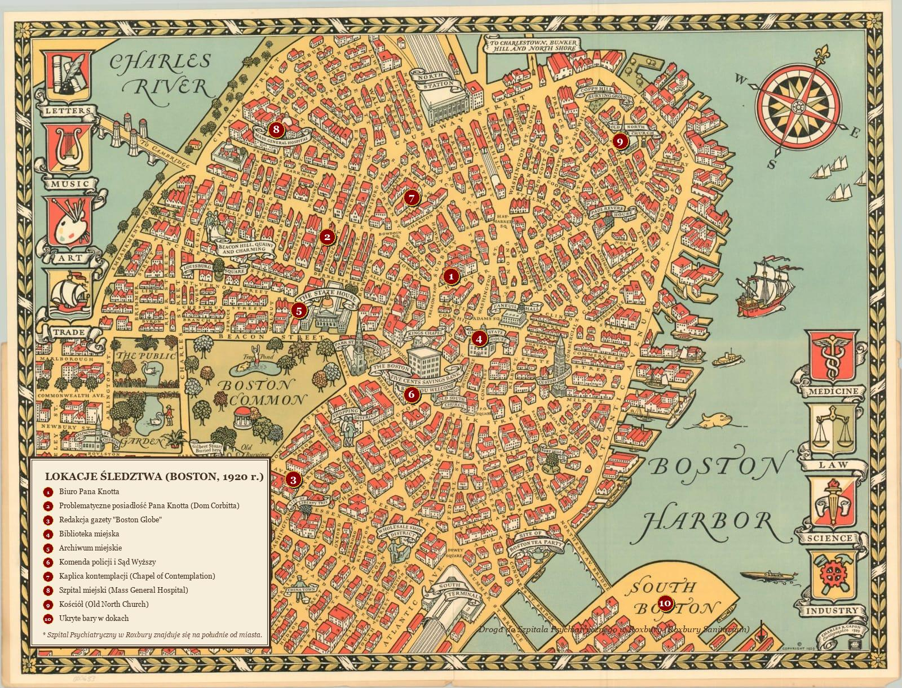
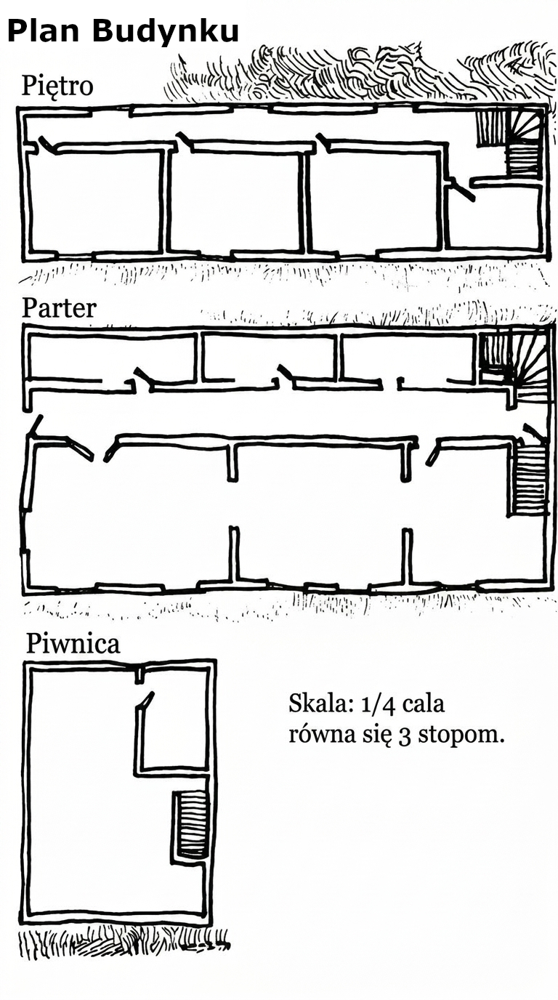

Badacze Tajemnic
Odkryte Materiały
Dokumenty zebrane przez badaczy podczas śledztwa.
Boston Globe — Kolejna ofiara klątwy
🔍 Otwórz
dokument
Boston Globe — Proces o zniesławienie
🔍 Otwórz
dokument
Akta Policyjne — Interwencja Macario
🔍 Otwórz
dokument
Akta Policyjne — Rozbicie Kultu
🔍 Otwórz
dokument
Archiwum Miejskie — Rejestr budynków sakralnych
🔍
Otwórz dokument
Archiwum Miejskie — Wyrok sądu
🔍 Otwórz
dokument
Biblioteka — Nowe domostwo pana Corbitta
🔍
Otwórz dokument
Biblioteka — Odejście pana Corbitta
🔍 Otwórz
dokument
Dziennik Wielebnego Michaela Thomasa
🔍 Otwórz
dokument
Mapy

Mapa Bostonu, 1920

Plan Domu Corbitta
Dzienniki Sesji
Kronika wydarzeń — co badacze odkryli, co przeżyli i co zapewne woleli zapomnieć.
Wiki
Podręczne zestawienia i materiały referencyjne dla drużyny.
Arsenał Badaczy
⚔ Otwórz